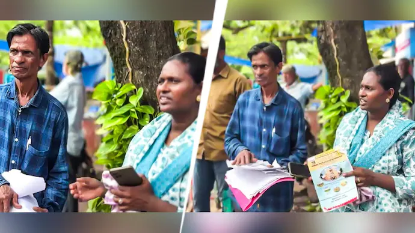

A Kannur court has ordered the exhumation of Shanavas's body in a Bengaluru hospital death case. The fresh post-mortem is expected to aid the medical negligence investigation.A court in Kerala's Kannur district has ordered the exhumation of the body of a man who died following a piles surgery at a government hospital in Bengaluru, directing that a fresh post-mortem be conducted as part of an investigation into allegations of medical negligence. The Taliparamba Sub-Divisional Magistrate Court ordered that the body of Shanavas, a resident of Iriveri in Kannur, be exhumed on Tuesday morning for a detailed forensic examination. According to officials, Shanavas died while undergoing treatment at Victoria Government Hospital in Bengaluru after undergoing surgery for piles. Following his death, his body was brought to his native village and buried at the Iriveri Juma Masjid graveyard without a post-mortem examination. The case took a new turn after Shanavas's wife alleged medical negligence and lodged a complaint seeking a detailed investigation into the circumstances surrounding his death. Based on the complaint, the V.V. Puram police in Bengaluru approached the court seeking permission to exhume the body and conduct a post-mortem, arguing that a scientific examination was necessary to ascertain the exact cause of death. Accepting the request, the court directed that the body be exhumed and subjected to a fresh expert post-mortem. Officials said the examination would be carried out after exhumation, and the report would be submitted to the investigating team. Investigators believe the fresh forensic findings could play a crucial role in determining whether the death resulted from complications related to the surgery or whether there was any medical negligence. The post-mortem report is expected to form a key part of the ongoing investigation.
